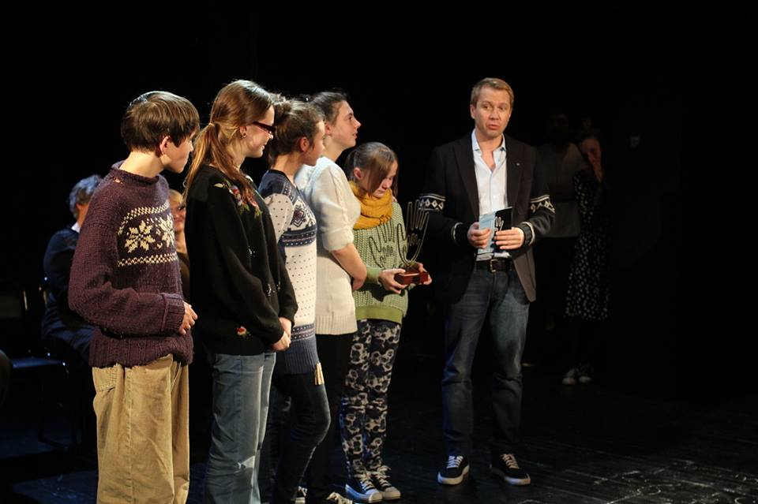
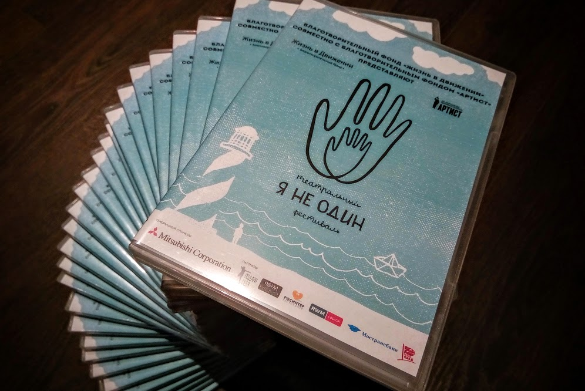
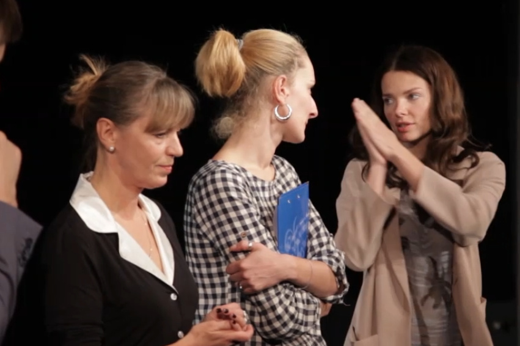
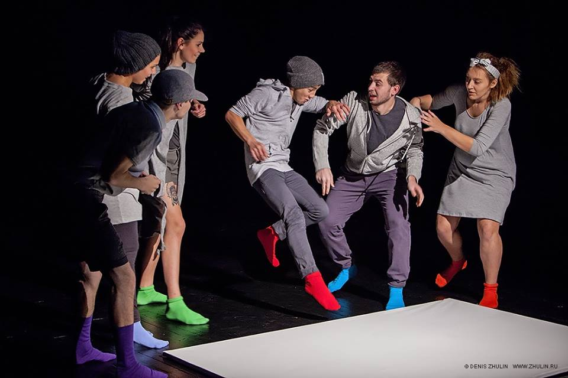
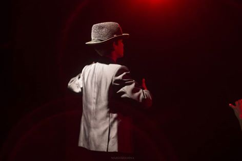
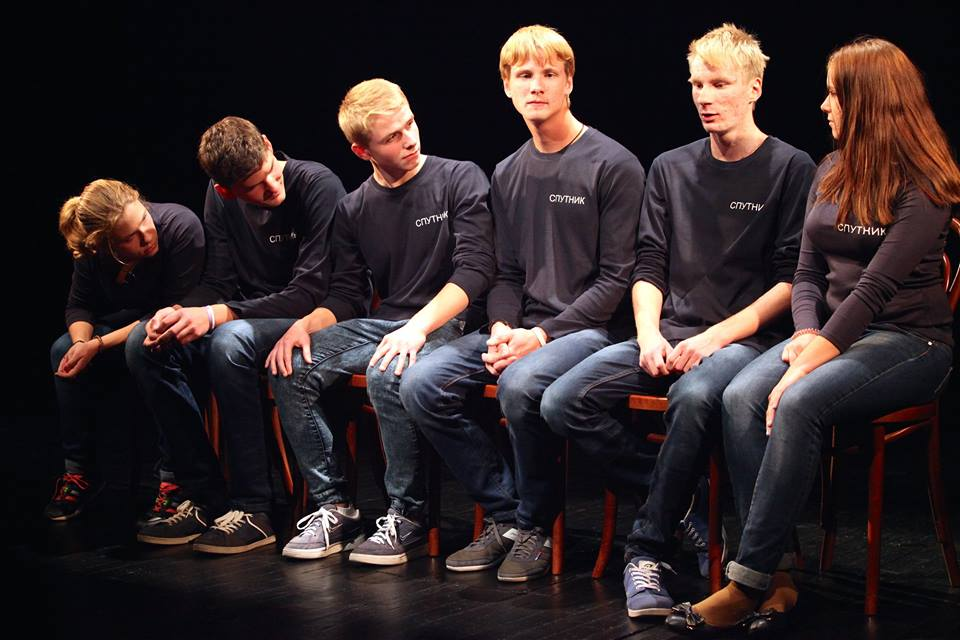

Год: 2015
Год: 2015
Жанр: документальный/драмма
Производство: ТФ "Я НЕ ОДИН"
Дистрибьютор: СТУПЕНЬ Production
Режиссёр: Антон Муравьёв, Артём Фираснов, Александра Клюка, Алексаей Богатырёв, Халиль Ахметзянов
Оператор: Дмитрий Граб, Иван Чайкин, Валерий Гадзиев, Алексей Богатырёв, Полина Татаркина
Продюссер: Мариэтта Цигаль-Полищук
DVD релиз: 01.12.2015
Премьера: 01.12.2015
О проекте
"КАК Я ВСТРЕТИЛ ТЕАТР" это цикл из пяти документальных фильмов, снятых пятью режиссёрами вгиковцами, рассказывающий о закулисьи театрального фестиваля "Я НЕ ОДИН".
Список фильмов:
Фильм первый....................."Я ЗНАЮ ВСЁ, НО ТОЛЬКО НЕ СЕБЯ"
Фильм второй......................"ЖИЛ ОДИН..."
Фильм третий......................"НЕРАССКАЗАННЫЕ ИСТОРИИ"
Фильм четвёртый..............."6 ТОНОВ СПЕКТРУМА"
Фильм пятый......................."ДОМА"
Трейлер
Фото





